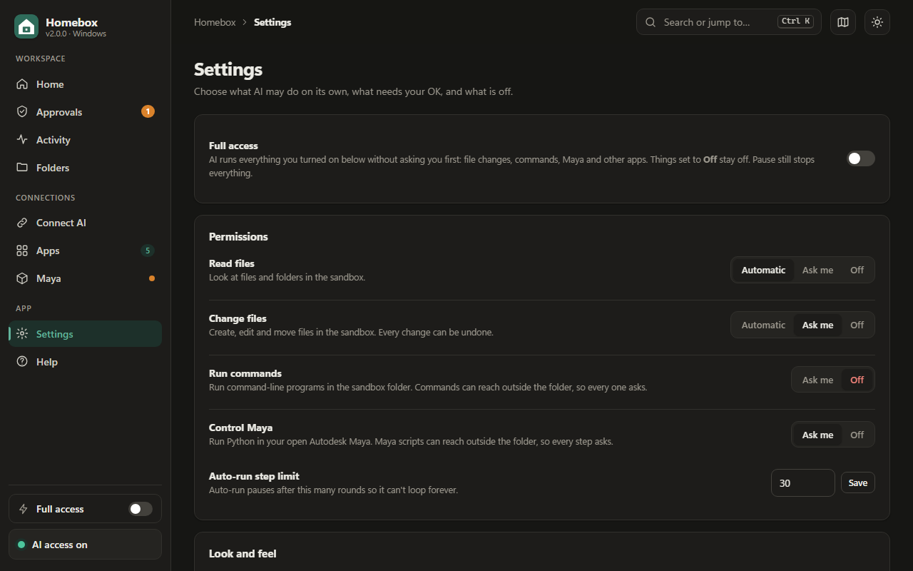

Approvals or Full access: when to let AI work on its own
Homebox gives you two ways to work. With approvals, the AI asks before every change and you click Approve or Deny. With Full access, it runs everything you've allowed without asking. Neither is "right". Each fits different situations, and switching takes one click.

How the pieces fit together
- Permissions decide what the AI may do at all: read files, change files, run commands, and each app. Each can be Off, Ask me or (for reading and changing files) Automatic.
- Full access turns every "Ask me" into "do it", for everything that isn't Off. Off stays off.
- Pause stops everything immediately, whatever the other settings say.
The defaults are cautious: reading is automatic, changing files asks, and commands and apps are off.
When approvals are the better choice
- The sandbox contains files you didn't write, such as downloaded code or documents from others. See prompt injection.
- Commands or app scripts are switched on. They can reach outside the sandbox.
- You're working in Excel or PowerPoint, which can't undo script changes.
- You're still learning what a particular AI site does with your tasks.
When Full access is the better choice
- You're building your own project from scratch in a fresh folder.
- Only file permissions are on, so everything the AI does can be undone.
- The task has many small steps, and approving each one would slow you down without adding safety.
- You've committed to Git or made a backup first. See Undo, backups and Git.
A simple rule
Full access is fine when everything the AI can do is undoable and the folder only contains your own work. As soon as commands, app scripts or other people's files are involved, go back to approvals.
Reviewing approvals quickly
- On the Approvals page, Enter approves and Esc denies the top request.
- The chat-page panel shows approvals too, so you don't need to switch windows.
- Requests you ignore are denied automatically after five minutes, so nothing runs while you're away.
Watching a Full access session
While Full access is on, an orange banner in Homebox reminds you, and the Activity page lists every action as it happens. If something looks wrong, click Pause first, then review. Undo what you don't want, and turn Full access off before continuing.
Common questions
Does Full access stay on after a restart?
Yes. It's a saved setting, so it stays on until you turn it off. The orange banner shows whenever it's on, so you won't forget.
Can the AI turn on Full access by itself?
No. Only you can change it, in the Homebox window. None of the AI's tools can change Homebox's settings.
Does Full access turn on apps or commands?
No. It only removes the question for things you've already allowed. Anything set to Off stays off, and the AI isn't even told those tools exist.
What happens to steps that were waiting when I turn it on?
They're approved straight away, so the AI isn't left stuck. Check the Approvals page before you switch if you'd rather review them first.